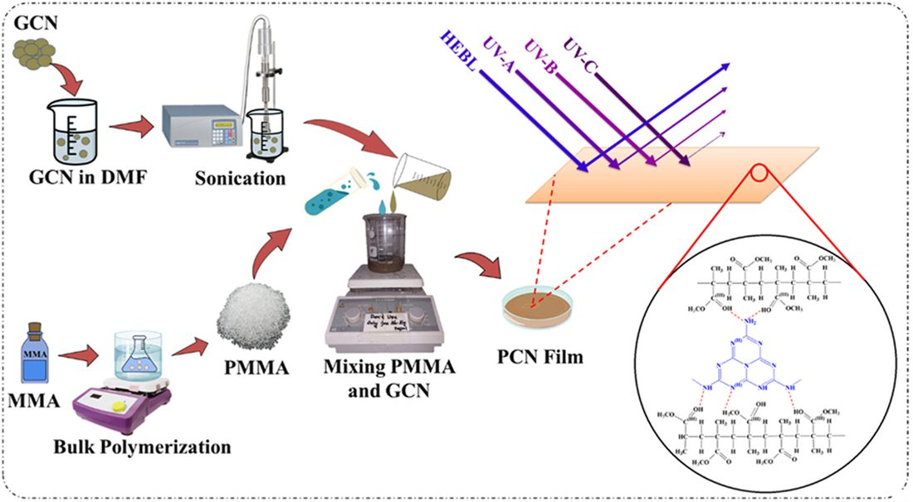
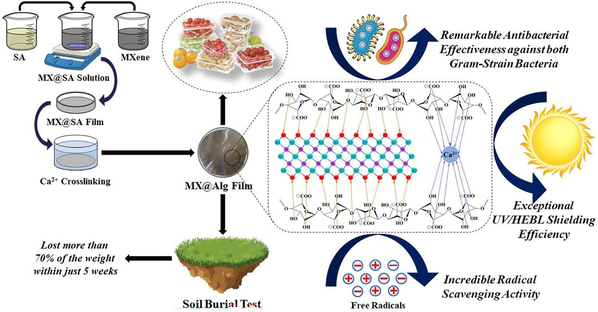
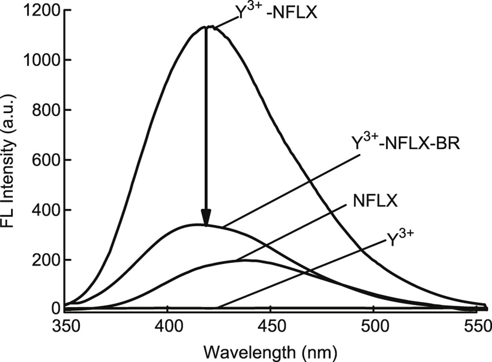
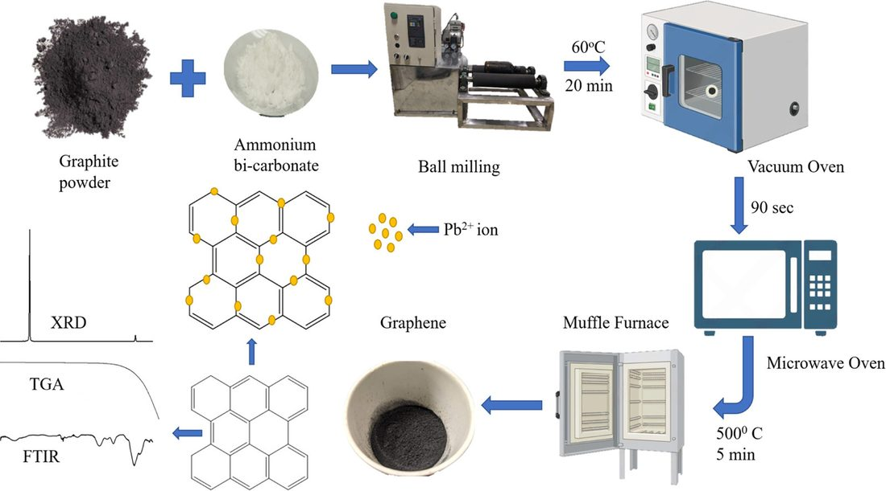

We make functional nanomaterials and use them to shield, preserve, clean and measure. The areas below are listed roughly in order of current activity.
UV and blue-light shielding films

Ultraviolet light and short-wavelength visible light (roughly 400–450 nm, often called high-energy blue light) degrade packaged food, plastics and pigments, and damage skin and eyes. Commercial UV absorbers are mostly small organic molecules that leach out or yellow over time.
We disperse delaminated Ti3C2Tx MXene and graphitic carbon nitride nanosheets in chitosan, alginate and PMMA. At low loadings the nanosheets absorb strongly in the UV and blue while the film remains transparent and flexible. We study how dispersion, film thickness and crosslinking affect optical, mechanical and barrier properties.
Selected papers
- Munshi et al., RSC Sustainability 3, 3036 (2025)
- Munshi et al., ACS Applied Engineering Materials 3, 3531 (2025)
- Munshi et al., Materials Chemistry and Physics 359 (2026)
Biodegradable packaging and biomaterials

The same films can do more than block light. Ca2+-crosslinked alginate/MXene and chitosan/MXene films show antibacterial and antioxidant activity, and we are testing them as active food packaging. Related projects include PVA bioplastics reinforced with keratin recovered from duck feathers, alginate–cellulose patches for wound care, and chitosan finishes for antibacterial textiles.
Selected papers
- Munshi et al., Packaging Technology and Science 39, 697 (2026)
- Munshi et al., Carbohydrate Polymer Technologies and Applications (2026)
- Habib et al., Results in Materials 27, 100735 (2025)
Nanoparticle-enhanced luminescence sensing

Europium(III) and terbium(III) complexes give narrow, long-lived emission when an organic ligand transfers absorbed energy to the metal ion. Many drugs, including fluoroquinolone antibiotics and catecholamines, can act as that ligand, so their concentration can be read from the lanthanide emission. Placing silver or gold nanoparticles near the complex increases the signal through plasmonic coupling.
Using this approach we have determined antibiotics, catecholamines, vitamins, bilirubin, ATP and proteins in serum, urine, food and pharmaceutical samples with ordinary spectrofluorimeters.
Selected papers
- Kamruzzaman et al., Microchimica Acta 174, 353 (2011)
- Alam, Kamruzzaman et al., Microchimica Acta 176, 153 (2012)
- Kamruzzaman et al., Journal of Luminescence 132, 3053 (2012)
- Kamruzzaman, Munshi, Mia, Journal of Analytical Chemistry 81, 1017 (2026)
Microfluidic chemiluminescence analysis

In microfluidic chips, sample and reagent streams meet in channels less than a millimetre wide and the light from a chemiluminescent reaction is measured as they mix. We built chips in which platinum or gold nanoparticles catalyse the luminol reaction, and used them to determine vitamin B1, vitamin B12, L-phenylalanine and total sugars in food and pharmaceutical samples using microlitres of reagent.
Selected papers
- Kamruzzaman et al., Food Chemistry 135, 57 (2012)
- Kamruzzaman et al., Sensors and Actuators B 185, 301 (2013)
- Kamruzzaman et al., Biomedical Microdevices 15, 195 (2013)
Water treatment

Textile effluent is one of the main sources of water pollution in Bangladesh. We prepare adsorbents from graphene, lignin and alginate, including graphene-functionalised aminated lignin and magnetic alginate beads, and study how they take up Congo red, Cr(VI) and Pb2+ and how well they can be regenerated.
Selected papers
- Billah et al., RSC Advances 16, 14378 (2026)
- Billah et al., Surfaces and Interfaces 74, 107655 (2025)
Current projects
- Graphitic carbon nitride / PMMA transparent films for UV and blue-light shielding
- MXene-dispersed alginate films for UV and blue-light shielding
- Ionically crosslinked, nanomaterial-loaded alginate–cellulose films for wound patching
- Graphene oxide–alginate beads for dye removal from coloured water
Laboratory instruments
Instruments and facilities used for synthesis, film fabrication and analysis in the Advanced Functional Materials and Nanotechnology (AFMN) Lab.
| Optical | UV–Vis spectrophotometerAbsorbance and transmittance of films and dispersions; UV-A, UV-B and blue-light shielding efficiency |
| Optical | SpectrofluorimeterLanthanide luminescence and fluorescence-probe assays |
| Spectroscopy | FTIR spectrometerFunctional groups and polymer–nanosheet interactions |
| Separation | HPLC systemQuantification of pharmaceuticals and contaminants |
| Analysis | Flow-injection chemiluminescence set-upSyringe pumps, microfluidic reactor and PMT detection |
| Synthesis | Probe and bath sonicatorsMXene delamination and nanosheet dispersion |
| Synthesis | CentrifugeSeparation and washing of nanomaterials |
| Synthesis | Magnetic stirrers and hot platesPolymer dissolution, blending and nanoparticle synthesis |
| Thermal | Vacuum oven, drying oven and muffle furnaceFilm drying, g-C3N4 synthesis and graphene exfoliation |
| Processing | Microwave oven and ball millMicrowave exfoliation and milling of graphite |
| General | Analytical balance, pH meter, fume hoodRoutine preparation and handling |